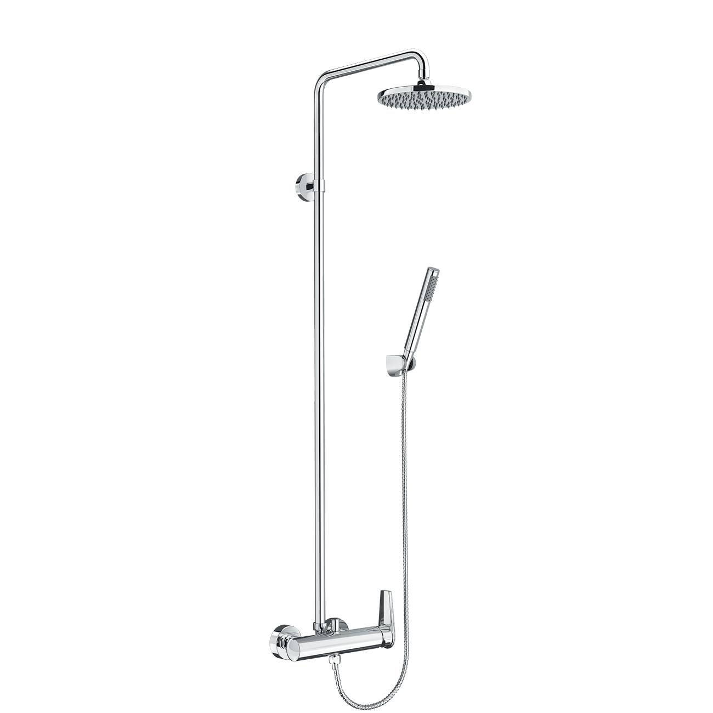
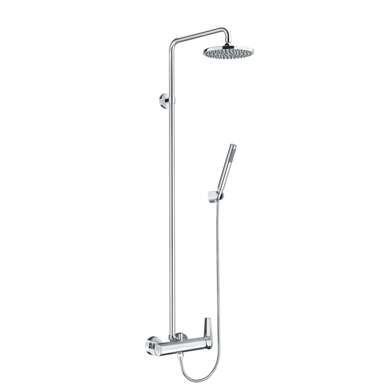
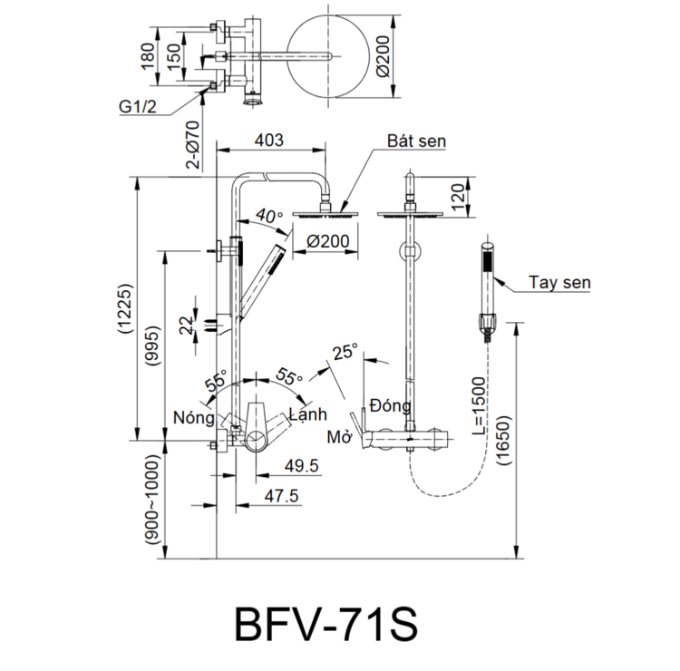

Sen tắm cây BFV-71S đến từ thương hiệu thiết bị vệ sinh INAX, mang đến vẻ đẹp hiện đại cho mọi không gian phòng tắm. Với thiết kế tinh giản và tích hợp nhiều tính năng ưu việt, mẫu sen cây này tối ưu hóa trải nghiệm tắm, tạo nên một không gian thư giãn hài hòa và tinh tế cho ngôi nhà của bạn.Thiết kế tối giản, vận hành trơn truSen tắm cây BFV-71S sở hữu thiết kế tay gạt dễ dàng sử dụng, mang lại cảm giác gạt trơn tru và kiểm soát chính xác lượng nước theo ý muốn.Tay sen được thiết kế tối giản, gọn nhẹ, là lựa chọn lý tưởng cho những người ưa thích sự tinh tế và không gian phòng tắm thoáng đạt.Cấu trúc sen cây mang lại sự dễ dàng và tiện lợi trong mọi thao tác, phù hợp với nhu cầu sử dụng hàng ngày của gia đình.Trải nghiệm tắm sảng khoáiBát sen tắm được thiết kế đặc biệt với kích thước gọn gàng, giúp phun nước đều khắp cơ thể.Công nghệ phân phối nước tiên tiến tạo ra làn nước ấm áp phủ đều lên da, mang lại cảm giác thư giãn và sảng khoái tuyệt đối.Sen cây BFV-71S hoạt động hiệu quả trong dải áp lực nước tiêu chuẩn từ 0.05 MPa đến 0.75 MPa, đảm bảo dòng chảy mạnh mẽ và ổn định.Độ bền vượt trội, an toàn sức khỏeSen tắm cây BFV-71S được làm từ vật liệu ít chì, đảm bảo an toàn cho nguồn nước và sức khỏe người dùng.Bề mặt được bao phủ bởi lớp mạ Crom/Niken bền vững, đạt tiêu chuẩn chất lượng cao, giúp chống ăn mòn và giữ được vẻ sáng bóng lâu dài trong môi trường ẩm ướt.Sen được trang bị đĩa Cartridge bền bỉ, không chỉ giúp tăng tuổi thọ sản phẩm mà còn hỗ trợ tiết kiệm nước và ngăn chặn rò rỉ hiệu quả.Video giới thiệu sen tắm INAXBản vẽ sen tắm cây BFV-71SThông số kỹ thuậtChất liệuĐồng mạ Crom/NikenLoạiSen cây tắm nóng lạnhKích thước-Thiết kếTay gạt trơn tru, tay sen tối giảnThương hiệuINAXTính năng- Bát sen phun đều, sảng khoái - Đĩa Cartridge bền bỉ, chống rò rỉ - Vòi ít chì, an toàn cho sức khỏeÁp lực nước0.05 MPa - 0.75 MPaKhác- Hotline tư vấn và bảo hành: 18006633
Sen tắm cây BFV-71S
Vòi chậu thương hiệu INAX.
Đã cập nhật danh sách yêu thích.
DANH MỤC: Vòi chậu
MÃ SẢN PHẨM: BFV-71S
DEPTH: mm
HEIGHT: mm
WIDTH: mm
Sen tắm cây BFV-71S đến từ thương hiệu thiết bị vệ sinh INAX, mang đến vẻ đẹp hiện đại cho mọi không gian phòng tắm. Với thiết kế tinh giản và tích hợp nhiều tính năng ưu việt, mẫu sen cây này tối ưu hóa trải nghiệm tắm, tạo nên một không gian thư giãn hài hòa và tinh tế cho ngôi nhà của bạn.Thiết kế tối giản, vận hành trơn truSen tắm cây BFV-71S sở hữu thiết kế tay gạt dễ dàng sử dụng, mang lại cảm giác gạt trơn tru và kiểm soát chính xác lượng nước theo ý muốn.Tay sen được thiết kế tối giản, gọn nhẹ, là lựa chọn lý tưởng cho những người ưa thích sự tinh tế và không gian phòng tắm thoáng đạt.Cấu trúc sen cây mang lại sự dễ dàng và tiện lợi trong mọi thao tác, phù hợp với nhu cầu sử dụng hàng ngày của gia đình.Trải nghiệm tắm sảng khoáiBát sen tắm được thiết kế đặc biệt với kích thước gọn gàng, giúp phun nước đều khắp cơ thể.Công nghệ phân phối nước tiên tiến tạo ra làn nước ấm áp phủ đều lên da, mang lại cảm giác thư giãn và sảng khoái tuyệt đối.Sen cây BFV-71S hoạt động hiệu quả trong dải áp lực nước tiêu chuẩn từ 0.05 MPa đến 0.75 MPa, đảm bảo dòng chảy mạnh mẽ và ổn định.Độ bền vượt trội, an toàn sức khỏeSen tắm cây BFV-71S được làm từ vật liệu ít chì, đảm bảo an toàn cho nguồn nước và sức khỏe người dùng.Bề mặt được bao phủ bởi lớp mạ Crom/Niken bền vững, đạt tiêu chuẩn chất lượng cao, giúp chống ăn mòn và giữ được vẻ sáng bóng lâu dài trong môi trường ẩm ướt.Sen được trang bị đĩa Cartridge bền bỉ, không chỉ giúp tăng tuổi thọ sản phẩm mà còn hỗ trợ tiết kiệm nước và ngăn chặn rò rỉ hiệu quả.Video giới thiệu sen tắm INAXBản vẽ sen tắm cây BFV-71SThông số kỹ thuậtChất liệuĐồng mạ Crom/NikenLoạiSen cây tắm nóng lạnhKích thước-Thiết kếTay gạt trơn tru, tay sen tối giảnThương hiệuINAXTính năng- Bát sen phun đều, sảng khoái - Đĩa Cartridge bền bỉ, chống rò rỉ - Vòi ít chì, an toàn cho sức khỏeÁp lực nước0.05 MPa - 0.75 MPaKhác- Hotline tư vấn và bảo hành: 18006633
DANH MỤC: Vòi chậu
MÃ SẢN PHẨM: BFV-71S
DEPTH: mm
HEIGHT: mm
WIDTH: mm